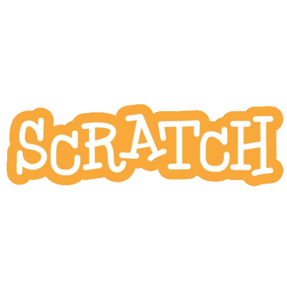

Scratch
Reccomended for:
- highly motivated students in grades 2-5, OR
- students in grades K-1 who have very strong mathematical ability and maturity, as well as the ability to read fluently, OR
- students in grade 6-8 who prefer a block-based programming language
Python
Reccomended for:
- highly motivated students in grades 6-8, OR
- students who already learned Scratch during the spring 2020 session, OR
- students in grades 2-5 who have very strong mathematical ability
Java

Reccomended for:
- students who have already learned Python during the spring 2020 session, OR
- students in grades 6-8 who have prior coding experience AND have strong mathematical ability
Scratch
- Module 1: Scratch environment (website overview)
- Module 2: Motion (coordinate plane overview)
- Module 3: Looks and Sounds Complete Overview
- Module 4: Loops
- Module 5: Conditionals with Sensing
- Module 6: Conditionals with Operators
- Module 7: String Manipulation from User Input
- Module 8 : Variables
- Module 9: Clones and Broadcasting
- Module 10: Blocks

.png)
.png)
Python
- Module 1: Introduction to Python
- Module 2: Variables and Data Types
- Module 3: If-Else Statements
- Module 4: String Methods
- Module 5: Functions
- Module 6: While Loops
- Module 7: For Loops
- Module 8: Lists
- Module 9: 2D Arrays and Nested Iteration
- Module 10: Dictionaries
- Module 11: Introduction to Python Libraries


.png)
Java
- Module 1: Data Definitions
- Module 2: Classes
- Module 3: Interfaces
- Module 4: Methods
- Module 5: Lists
- Module 6: Recursion
- Module 7: Abstract Classes
- Module 8: Array Lists
- Module 9: Loops
- Module 10: Searching
- Module 11: Sorting
- Module 12: Arrays

All three courses are mostly project-based. In a typical session, students will learn the necessary content via the online lesson and then work on a mini-project that applies the knowledge learned. Classes will be formed so that students are with students in a similar age group as them so that all students in a class can move at around the same pace.
Back to Top